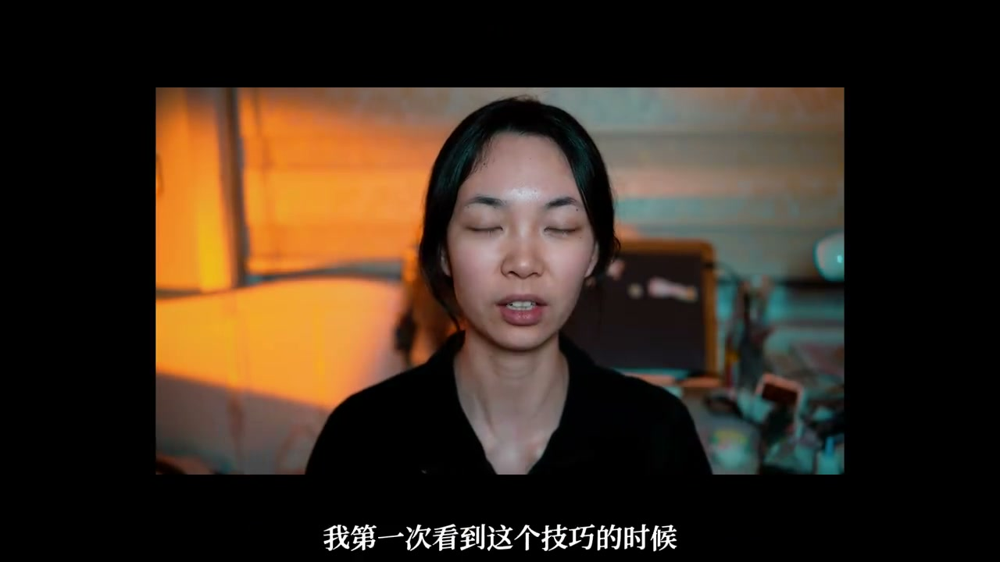

内容要点
这段视频围绕「✂️2min玩转声画联动、高级感 | vlog剪辑」展开，按时间介绍其中的关键环节。今天我们来选一个好东西。
开场与主题引入
今天我们来选一个好东西。让声音和画面联动起来。戴好耳机 想证。这是我要说的第一个词。就是让画面主导声音跟随着画面的一些动式去做一些变化。这个动式一般就是含有开始或者结束意味的动作。比如说戴耳机 打开声音机 开门 关门 打开包的拉链。甚至做饭的时候你拧那个液化器的那个悬扭

[00:00] 开场与主题引入相关画面。
Opening and theme-introduction footage.
核心内容
你拧完之后把那个声音放出来。或者说你一开始那个背景音比较小 你拧完之后。那个背景音给它调大。这种细节真的很出人。我就超级喜欢这种不是花里胡彻的炫技。但是呢它又有巧思在的。就是一种含蓄的高级感。这个让声音和画面联动起来的另一个神方法。就是让音乐做主导。画面跟随着音乐的变化去做剪辑

[00:43] 核心内容相关画面。
Core-content footage.
操作演示
这里我就举两个我自己烙个钟的案例给大家作为参考。这里我写字的这个动作和音乐就是匹配上的。那个后面我也是根据音乐的变换去变换了画面。这里呢就是根据音乐区做了一些跳切的处理。OK 你们学会了吗。我会说很多干货。但是这个技巧。我是自己真的真的很喜欢。我还记得我第一次看到这个技巧的时候。我真的觉得很高级

[01:26] 操作演示相关画面。
Operational demonstration footage.
总结
这里我就举两个我自己烙个钟的案例给大家作为参考。